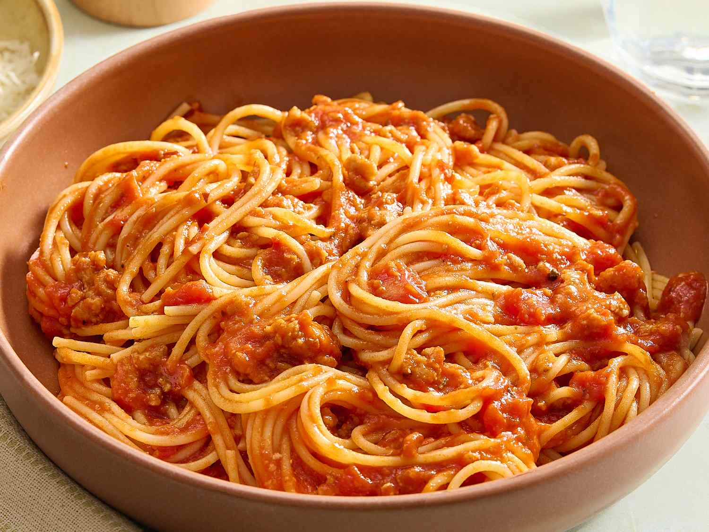

Spaghetti recipe

Spaghetti is a national dish originated from Italy. has a mild, earthy, and slightly
nutty wheat flavor with a chewy, firm texture
It is easy to do. Brown your meat in a bit of oil, and then stir in onions until they
soften. Then add lots of flavor with garlic, tomato paste, oregano, and red pepper
flakes. To finish the sauce, add a bit of water (or broth) and crushed tomatoes. You
only need to simmer the sauce for about 25 minutes, so about 15 minutes before it is
ready, you can cook your spaghetti.
Ingredients
- Spaghetti
- Crushed tomatoes
- Tomato paste
- Ground beef
- Garlic
- Onion
- Oregano
- Pepper
- Salt
Steps
- Brown the meat: Heat the oil in a large pot over medium-high heat (we use a Dutch oven).
Add the meat and cook until browned, about 8 minutes. Use a wooden spoon to break the
meat into smaller crumbles as the meat cooks.
- Build the sauce: Add the onions and cook, stirring every once in a while, until softened,
about 5 minutes. Stir in the garlic, tomato paste, oregano, and red pepper flakes and
cook, stirring continuously for about 1 minute.
- Add liquid and tomatoes: Pour in the water and use a wooden spoon to scrape up any bits
of meat or onion stuck to the bottom of the pot. Stir in the tomatoes, three quarders
teaspoon of salt, and a generous pinch of black pepper.
- Simmer: Bring the sauce to a low simmer. Cook uncovered for 25 minutes. As it cooks, stir
and taste the sauce a few times so you can adjust the seasoning accordingly (see notes
for seasoning suggestions).
- Cook spaghetti: About 15 minutes before the spaghetti sauce finishes cooking, bring a
large pot of salted water to a boil. Then, cook the pasta according to the package
directions, but check for doneness a minute or two before the suggested cooking time.
Drain.
- To serve: Remove the sauce from the heat and stir in the basil. Toss in the cooked pasta
and leave for a minute so that it absorbs some of the sauce. Toss again, and then serve
with grated parmesan cheese on top.
Home page